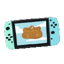

Nintendo - Animal Crossing 
Es una serie de videojuegos de simulación de vida publicada por Nintendo. en la que el jugador vive en un pueblo habitado por animales antropomórficos, llevando a cabo diversas actividades.
La serie destaca por su sistema de juego abierto y su amplio uso del reloj y el calendario interno en el sistema para simular el paso real del tiempo, es decir, que el juego se desarrolla en tiempo real.
En total son siete juegos, siendo publicado el primero en 2001, aunque dos de ellos solo en Japón. Hay entregas para Nintendo Gamecube, Nintendo DS, Wii, Nintendo 3DS y Nintendo Switch.
Entregas
- Entrega para Nintendo 64 y GameCube
- ▶ El primer juego de la serie fue Dōbutsu no Mori Publicado solo en japón, donde salió a la venta el 14 de abril de 2001
- Entrega para Nintendo DS
- ▶ La segunda publicación de la franquicia fue Animal Crossing: Wild World, lanzada en Japón el 23 de noviembre de 2005, en Norteamérica el 5 de diciembre y en Europa el 31 de marzo de 2006
- Entrega para Wii
- ▶ Animal Crossing: City Folk o Animal Crossing: Let's Go to the City es el tercer juego de la saga y fue publicado en invierno de 2008.
- Entrega para Nintendo 3DS
- ▶ Es la cuarta entrega de la serie Animal Crossing, conocida como Animal Crossing: New Leaf, salió a la venta el 8 de noviembre de 2012 en Japón, el 9 de junio de 2013 en América y el 14 de junio del mismo año en Europa.
- Entrega para Nintendo Switch
- ▶ Animal Crossing: New Horizons fue anunciado durante el Nintendo Direct de septiembre de 2018 para la plataforma Nintendo Switch. El juego fue lanzado el 20 de marzo de 2020, aunque fue inicialmente planeado para 2019.
Eventos del juego
La franquicia se caracteriza por el paso del tiempo y el uso de un calendario natural. Por este motivo, los videojuegos de Animal Crossing celebran eventos que coinciden con festejos del mundo real, tales como San Valentín o Navidad.
En esta tabla se recogen algunos de los eventos típicos de las diferentes entregas:
| Evento | Día | Descripción |
|---|---|---|
| Año Nuevo | 1 de enero | La madre del personaje envía una carta |
| Día de los enamorados | 14 de febrero | Canela envía una carta al jugador con un regalo |
| Carnaval | 15 de febrero | Conga entrega muebles especiales a cambio de plumas de colores |
| Halloween | 31 de octubre | Es posible obtener chucherías y muebles especiales. |
| Día del Pavo | Cuarto jueves de noviembre | Guindo pide ingredientes al jugador para poder preparar sus platos |
| Día de los Juguetes | 24 de diciembre | Renato entrega premios y el jugador puede repartir regalos entre sus vecinos |
| Nochevieja | 31 de diciembre | Ladino vende gorros y vengalas, además de que es posible obtener un objeto conmemorativo especial |